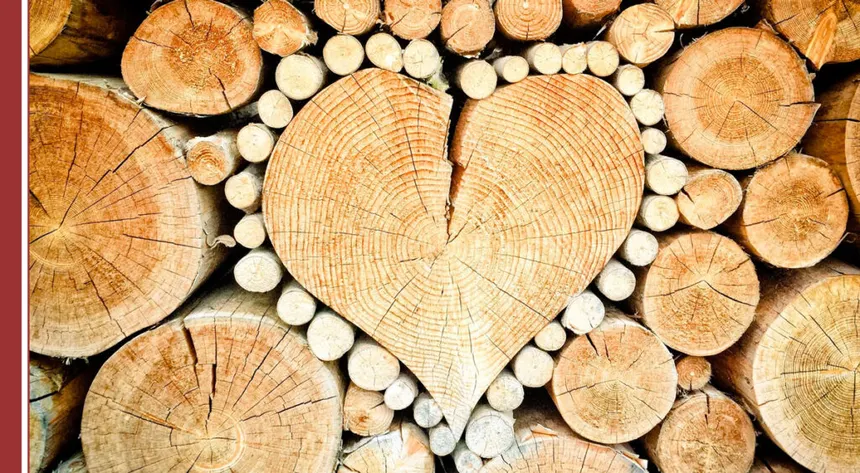
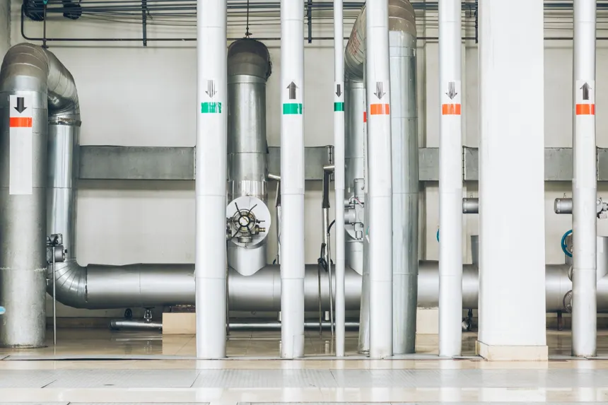

1. Extracció i Processament de Matèries Primeres

Avalua els impactes des de la captació de recursos naturals (mineria, agricultura, fusta) fins a la seva transformació inicial.
L'ACV és una metodologia avalada per les normes ISO 14040 i 14044 que permet quantificar l'impacte ambiental d'un producte, procés o servei al llarg de tot el seu cicle de vida.

Avalua els impactes des de la captació de recursos naturals (mineria, agricultura, fusta) fins a la seva transformació inicial.

Analitza l'energia consumida, les emissions i els residus generats durant el procés d'elaboració o ensamblatge del producte final.